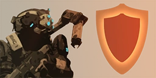
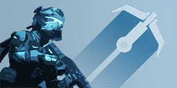
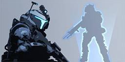
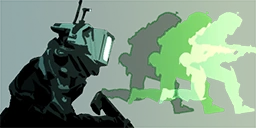
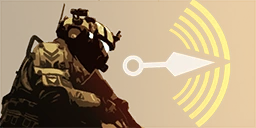
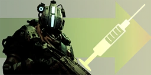

Pilots
Pilots are skilled soldiers tasked with piloting the titan mek's. Make no mistake even out side of their Titan they are a forced to be reckoned with each pilot is equipment with a tactical these being Cloak • Pulse Blade • Grapple • Stim • Phase Shift • A-Wall • Holo Pilot
- A-Wall 
- Cloak
- Grapple 
- Halo Pilot 
- Phase Shift 
- Pulse Blade 
- Stim 
The A-Wall tactical allows the user to create a wall of energy to protect form incoming projectiles.

The cloak tactical give its pilot the ability to turn near invisible.
The Grapple tactical give its pilot the ability to send out a grappling hook to accelerate there movement through the fray
The Holo tactical gives the pilot the ability to send a mirror copy of themselves to distract the enemy
The Phase-shift tactical allows a pilot to Phase into an alternate space and avoid damage.
The Pulse Blade tactical is a throwing knife that give the Pilot and their team the ability to see the outline of enemy's on the map
The stim tactical gives the pilot double their speed and heals the user after a delay of activation.